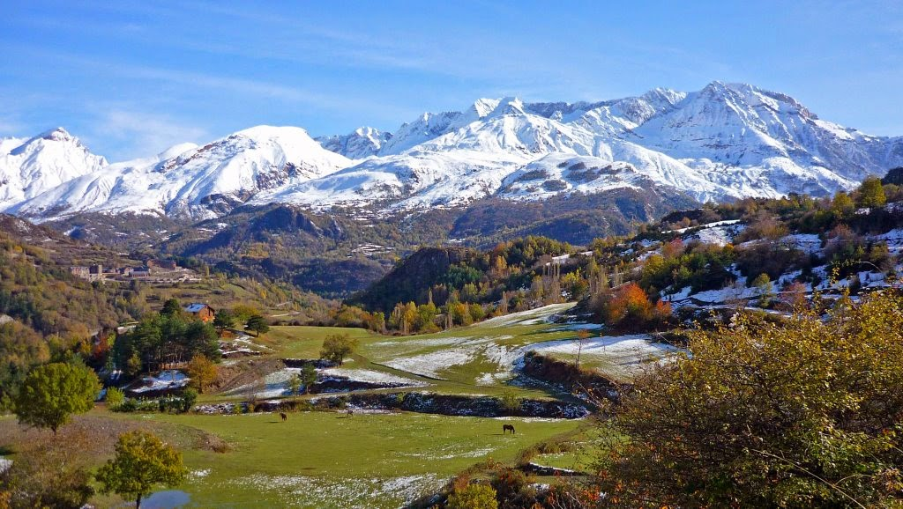

Columna de la izquierda. Columna de la izquierda. Columna de la izquierda. Columna de la izquierda.
Mis buscadores
Otras informaciones
Otras informaciones. Otras informaciones. Otras informaciones. Otras informaciones. Otras informaciones. Otras informaciones.
Información principal
Contenido principal. Contenido principal. Contenido principal. Contenido principal.
Sierra de Gredos

La sierra de Gredos es una sierra de España perteneciente al Sistema Central, situada entre las provincias de Ávila, Cáceres, Madrid y Toledo. Su maxima altitud se da en la provincia de Ávila en el pico del Moro Almanzor a 2.592m, que divide los terminos municipales de Zapardiel de la Ribera y Cancelada. Esta declarada parque regional. Gredos es una de las sierras mas extensas del Sistema Central y esta compuesta por cinco valles fluviales: Alto tormes, Alto Alberche, Tietar Oriental, Tietar Occidental y la Vera, y el valle del Ambroz.
Pirineos
Los Pirineos, o el Pirineo como prefieren denominar sus habitantes al referirse a una parte o región de éstos (español: Pirineos; francés: Pyrénées; catalán: Pirineus; occitano: Pirenèus; aragonés: Pireneus/Perinés; euskera: Pirinioak o Auñamendiak), son una cordillera montañosa situada al norte de la península ibérica, entre España, Andorra y Francia.
Picos de Europa
Los Picos de Europa son un macizo montañoso localizado en el norte de España que pertenece a la parte central de la cordillera Cantábrica. Aunque no muy extenso, su cercanía al mar hace que sea pródigo en accidentes geográficos de gran interés. En la actualidad el Parque nacional de los Picos de Europa constituye el segundo parque nacional más visitado de España, después del Parque nacional del Teide (Tenerife)